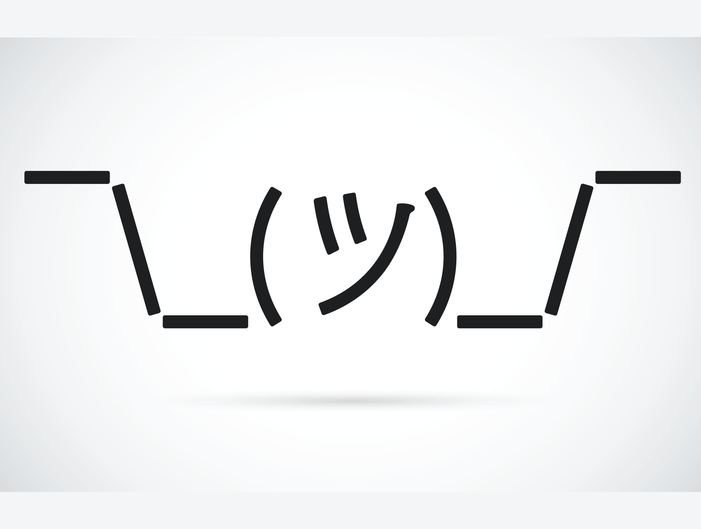

Esto es un parrafo con Bold y con strong.
Si me preguntas esto se ve igual pero cada quien.
Para las cursivas se usa "i" pero si usas "em", cuando hay lector lo lee con emfasis.
Para hacer algo chico se usa "small".
Con "mark" se define algo que debe ser remarcado o subrayado.
Para marcar contenido borrado se usa "del" que tacha el texto.
Cuando usas ins subraya lo que este entre eso.
Para usar subindices se usa sub como en H2O.
Para usar el superindice es sup como en las potencias, por ejemplo x3.